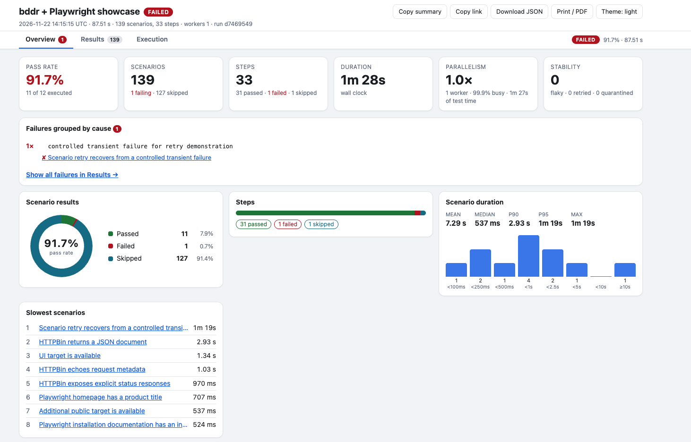

HTML report
One file, no server, works offline. Send it by email or attach it to a CI run.
Create it
$ npx bddr -f html:reports/report.html
$ open reports/report.html # macOS
$ start reports\report.html # Windows
What is in it
Overview
- Cards for pass rate (with the change from the previous run), duration, parallelism and stability.
- A status chart, duration percentiles and a histogram.
- Failures grouped by cause, the slowest scenarios, and a breakdown by feature, tag and group.
Results
- Every scenario with its steps, errors, logs, screenshots and attachments, and every attempt of a retried scenario.
- Data-driven scenarios (Examples, CSV, Excel, JSON) as one colour-coded table, with a row per scenario and a column per parameter.
- Step tables and doc strings as tables tinted by the status of the step.
- Filters by status, log level, tag and search text.
Execution
- The timeline: one lane per worker with a bar for each scenario attempt. Retried attempts are hatched. Worker start-up and busy percentage are shown. There is one row per group. Click a bar to open the scenario.
- The dependency graph: scenarios and groups that wait for each other, left to right. Soft dependencies are dashed.
The Execution tab: the worker timeline and the dependency graph.
Capture this yourself:
Run npx bddr --workers 4 in examples/orchestration, open the Execution tab of the report and capture the timeline and graph together. Light theme, about 1400 px wide.
Save as assets/img/report-execution.png.
History
- The pass rate of each recorded run.
- A table of the flakiest scenarios and a trend per scenario. Needs
history: true.
Share it
- Copy summary puts a short text for Slack or a pull request on the clipboard.
- Copy link keeps the current tab, search and filters in the link.
- Download JSON and Print / PDF are in the toolbar.
- Every scenario has a permanent link, and the theme follows your system setting with a switch.
- It works from phone to wide screen.
Options
| Option | What it does |
|---|---|
outputFile | Where to write it. Default reports/report.html. |
title | The title at the top. |
logLevel | The lowest level of log lines stored in the file. |